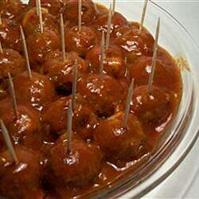

Manhattan Meatballs

Description
Sweet and sour meatballs that will be a hit at any party.
Ingredients
- 2 pounds extra lean ground beef
- 2 cups dry bread crumbs
- 2 eggs
- ½ cup minced onion
- 2 tablespoons chopped fresh parsley
- 2 teaspoons salt
- 1 cup barbeque sauce
- 1 ½ (16 ounce) jars pineapple preserves
Steps
- Prehead oven to 350 degrees F (175 degrees C)
- In a medium-size mixing bowl, mix barbeque sauce and pineapple preseves together.
- In a medium-size mixing bowl, combine meat, breadcrumbs, eggs, onions, salt, and parsley. Mix well and form into bite-size balls. Arrange the balls in a single layer in a 9x13 inch baking dish. POur the barbecue sauce mixture evenly over the meatballs.
- Bake for 30 to 45 minutes, until the meat is cooked.
Home